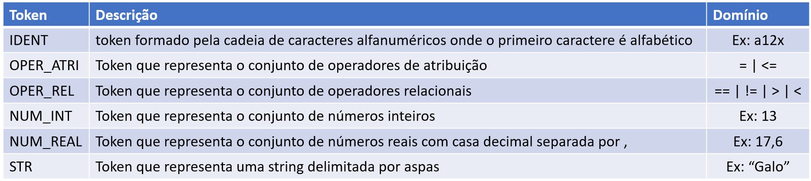
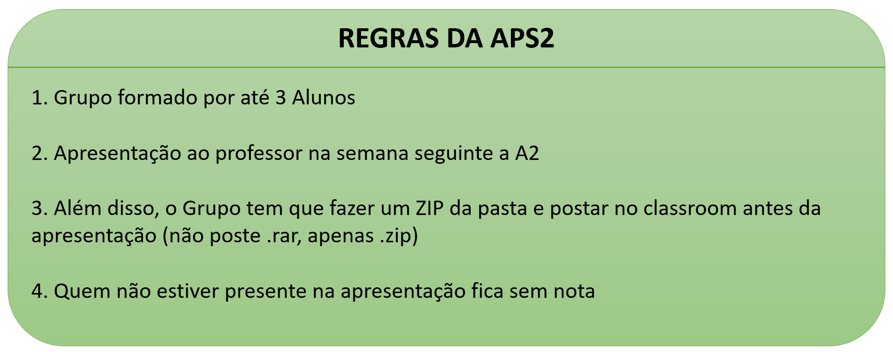

APS 2
Implemente um analisador léxico que reconhece os seguintes Tokens


Observação 1: Para facilitar a vida, os tokens são separados entre si por espaço, uma função javascript
que ajuda bastante é o split().
Observação 2: Ao invés de exibir o resultado em um alert(), exiba em uma tabela.
Observação 3: Caso deseje, pode melhorar a página (css, frameworks, etc) usando recursos de layout que
você aprendeu em outras disciplinas.